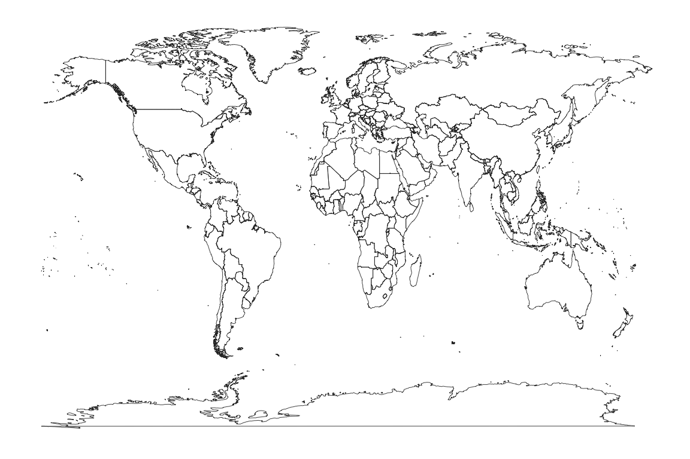
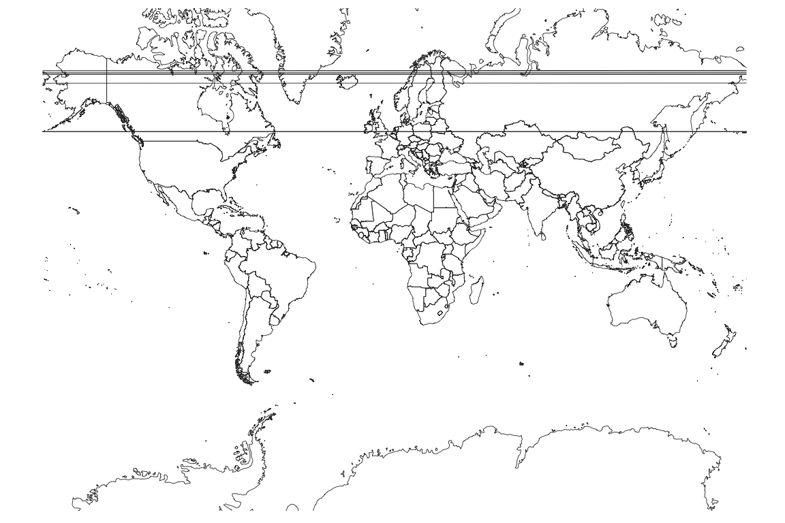
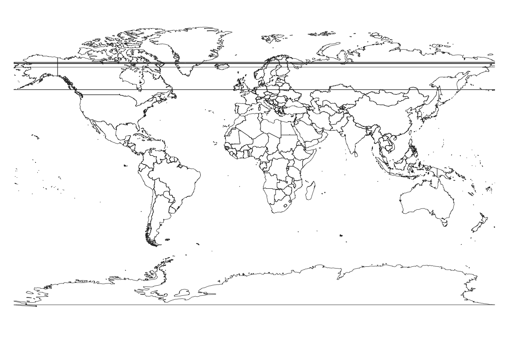
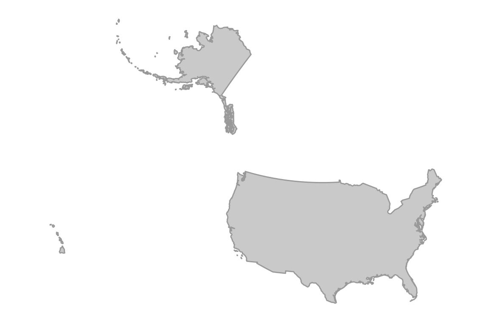
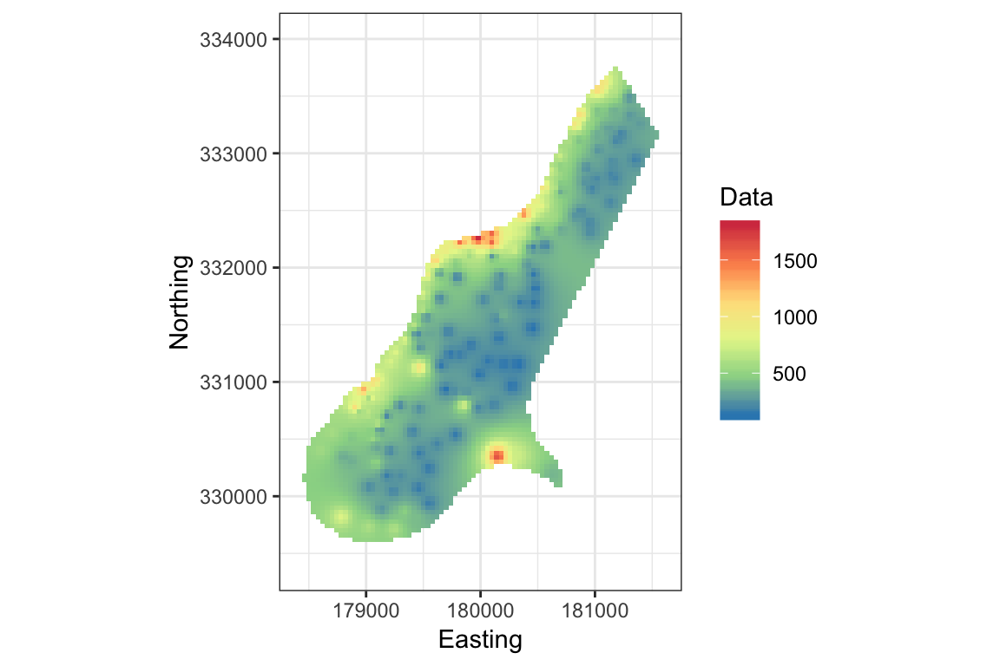
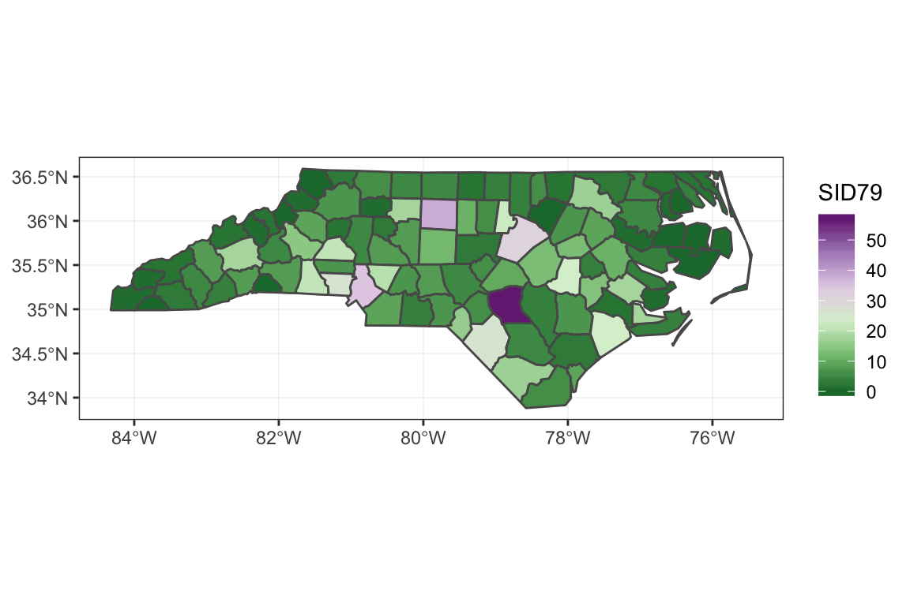

This document is typeset in RMarkdown.
What are geospatial data?
Geospatial data are data that have location attributes, which reference locations on the earth’s surface. Examples include measurements of elevation above sea level, the median income in a census block or the location of a point-of-interest.
The most basic location attribute is a georeferenced point, usually given as degrees longitude and latitude. The longitude/latitude coordinate system is often referred to as geographic coordinates to distinguish them from map coordiantes, which exist in two dimensions as printed on a map. The picture below illustrates latitude/longitude coordinates.

Geographic coordinates are natural in the sense that, ignoring details like rocky overhangs, a straight line angling from the center of the earth will emerge at a unique location on the surface, regardless of the exact shape of the earth. Many analyses assume a spherical earth model, which we know is wrong, but is nonetheless sufficiently accurate for many applications.
Generally speaking, if you only need to know where something is within a few tens-of-meters, the details of the earth model is not terribly important. For demanding applications like precision surveying, which may involve sub-centimeter requirements, an accurate model of the earth’s surface is required. Precision applications typically employ a geoid model that has an undulating height profile. The undulations arise through complex earth processes that involve plate tectonics, ocean weight and gravitational variation. Here is a typical geoid rendered in 3D. The vertical undulations are greatly exaggerated. They are in reality invisible to the naked eye.

More commonly, an ellipsoid model is employed, which extend the spherical model with an extra parameters that specifies the amount of flattening of the poles owing to the earth’s rotation. For example, the World Geodetic System (WGS 84) used by GPS is based on an ellipsoidal earth model. An ellipsoid is defined by two radii as shown in this figure.

While this is good to know, it will generally not impact most studies. Often we care more about relative accuracy within a region spanning kilometers rather than being able to go out into the field and precisely locate a point based on its coordinates. An important caveat however is that you never want to mix geospatial data from different datums or map projections (discussed below). It is critical to transform all sources of data into the same spatial reference system or else nonsense will ensue. Multiple layers of geospatial data, all mutually referenced, is sometimes referred to as a coverage and is a key concept in Geographic Information Systems.
Mapping geospatial data
Data visualization is a first step towards data analysis. R has an extensive library of routines for mapping geospatial data. A thorough introduction to data visualization in R is available in the R for Data Science book.
First we need to load some packages. The grey blocks show R code. Any output is shown below the block.
library(magrittr) # enable %>% pipe operator
library(ggplot2) # plotting functions
#> Registered S3 methods overwritten by 'ggplot2':
#> method from
#> [.quosures rlang
#> c.quosures rlang
#> print.quosures rlang
library(ggmap) # map plotting functions
#> Google's Terms of Service: https://cloud.google.com/maps-platform/terms/.
#> Please cite ggmap if you use it! See citation("ggmap") for details.
#>
#> Attaching package: 'ggmap'
#> The following object is masked from 'package:magrittr':
#>
#> inset
library(leaflet) # fancy map plotting functions
library(ggthemes) # extra plot styles
library(proj4) # advanced map projections
library(raster) # for raster data
#> Loading required package: sp
#>
#> Attaching package: 'raster'
#> The following object is masked from 'package:magrittr':
#>
#> extract
library(sf) # vector data
#> Linking to GEOS 3.6.1, GDAL 2.1.3, PROJ 4.9.3
library(RStoolbox) # fortify rasterThe p_load command will install packages if they are not present already. The SSI package depends on pacman so it should already be installed. The :: syntax calls the function on the right-hand-side from the package given on the left-hand-side. This way, we do not have to load the pacman package itself.
Now we load some data.
data(airports, package = "nycflights13") # flights to NYC
knitr::kable(head(airports)) # fancy table output first few rows| faa | name | lat | lon | alt | tz | dst | tzone |
|---|---|---|---|---|---|---|---|
| 04G | Lansdowne Airport | 41.13047 | -80.61958 | 1044 | -5 | A | America/New_York |
| 06A | Moton Field Municipal Airport | 32.46057 | -85.68003 | 264 | -6 | A | America/Chicago |
| 06C | Schaumburg Regional | 41.98934 | -88.10124 | 801 | -6 | A | America/Chicago |
| 06N | Randall Airport | 41.43191 | -74.39156 | 523 | -5 | A | America/New_York |
| 09J | Jekyll Island Airport | 31.07447 | -81.42778 | 11 | -5 | A | America/New_York |
| 0A9 | Elizabethton Municipal Airport | 36.37122 | -82.17342 | 1593 | -5 | A | America/New_York |
In the above code, data is a command that loads data supplied by a package into your current working environment. These data will be stored in a tabular data structure called a data frame. Data frames have a collection of named columns all of equal length. The head command extracts, by default, the first six rows. The kable function converts a data frame to fancy output used by knitr to render the document.
These data contain longitudes and latitudes that we can plot. Note that because your computer screen is flat and not spherical (unless we delve into 3D rendering), we are implicitly using a map projection when we plot the data. More on this to come.
The following demonstration uses the ggmap package. A nice feature of ggmap is that it can download a basemap from Google using the maps API.
Unfortunately the example below no longer works as Google has made their mapping API proprietary. You get get a Google API key by cliking here. You will then have to call register_google.
basemap <- get_map("Texas", zoom = 6, maptype = "hybrid", force = FALSE, messaging = FALSE)
ggmap(basemap) +
geom_point(aes(x = lon, y = lat), data = airports, color = "yellow", alpha = 0.5)So if you are new to R, that will be a lot to take in. Don’t despair, we’ll break it down into steps later. A good source to study is the R for Data Scinece book. It covers ggplot (the base for ggmap) in detail.
There are some limitation using ggmap. It is difficult to set the zoom level correctly and adjust the aspect ratio of the map. The QGIS project does this much better. You may also find that Google will deny downloading of the basemap owing to a quota on downloads using the maps API. There are some work-arounds for this. Nonetheless, this does demonstrate some of the mapping capabilities of R.
Another mapping package for R is leaflet. It generates maps using a JavaScript API and then renders them locally. Leaflet is quite sophisticated. It returns JavaScript code that builds an interactive map with zooming and other controls as options.
leaflet() %>%
addTiles() %>%
addCircleMarkers(
lng = ~ lon, lat = ~ lat, radius = ~ 5,
popup = ~ name, data = airports
) %>%
setView(lng = -97.7, lat = 30.2, zoom = 10)Try zooming out on the map (this will not work in PDF, only HTML). The blue markers are popups with the name of the airport. Leaflet has quite nice basemaps.
Notice the use of the ~ operator in the above code. It is an example of R’s formula syntax. A formula is a placeholder used to extract information from a data frame, in this case, the airports data frame. This example also uses the %>% pipe operator.
Map Projections
So far we have just demonstrated some of the mapping capabilities of R. When working with geospatial data, we must be aware of the reference system that defines what a coordinate means in terms of its location on the earth’s surface. There are two types of coordinate systems: geographical (a.k.a. geodetic) coordinates given as angles and map (a.k.a. cartesian) coordinates given in \(x\) and \(y\) positions in the plane. Unlike geographical coordinates, which are fairly simple to map onto the earth’s surface, map coordinate always involve some degree, often considerable, of distortion. This distortion arises because we must project the roughly spherical earth onto a flat surface. Picture how you might show the whole surface of a beach-ball laid flat on the sand. There are many, many cartesian coordinate systems in cartography. Let’s explore some.
First we will grab some data from the maps package.
| long | lat | group | order | region | subregion |
|---|---|---|---|---|---|
| -69.89912 | 12.45200 | 1 | 1 | Aruba | NA |
| -69.89571 | 12.42300 | 1 | 2 | Aruba | NA |
| -69.94219 | 12.43853 | 1 | 3 | Aruba | NA |
| -70.00415 | 12.50049 | 1 | 4 | Aruba | NA |
| -70.06612 | 12.54697 | 1 | 5 | Aruba | NA |
| -70.05088 | 12.59707 | 1 | 6 | Aruba | NA |
The ggplot2 package has transformed the map data into a data frame where each row contains a single longitude-latitude pair. The group column specifies which coordinates belong to the same polygon. Now let’s plot it.
world_plot <- ggplot(world, aes(long, lat)) +
geom_map(aes(map_id = region), map = world, color = "#2b2b2b", fill = NA, size = 0.15) +
theme_map()
world_plot # Tell R to "print" the object, which in this case draws the map
This is not an especially attractive map projection. We have simply mapped each longitude and latitude directly to cartesian x-y coordinates. This is known as the the Equirectangular map projection. You can find an extensive list and illustrations of different map projections on wikipedia. The ggplot2 package knows about other map projections. We can try for example the Mercator projection.

This is not much better and we all see some artifacts caused by some of the polygons wrapping around the 180/-180 degree breakpoint in longitudes. Some software will handle this correctly and some will not. A common solution is to split the polygons into separate east and west parts.
Notice how distorted is the output. Greenland and Antarctica look dramatically larger than Africa. This is a necessary artifact of forcing a spheroid onto a plane. There are however much better projections to use when mapping the entire earth. Each represents a different trade-off of different forms of distortion. I like the Gall projection for global boundaries.

The Gall projection still shows some distortion albeit not as bad as the Mercator.
Other projections are better for small regions of the globe. The Lambert Azimuthal projection used by the US National Atlas is especially suited to showing the U.S. boundaries. Some details of this projection can be found at spatialreference.org. This projection is not supported by coord_map so we will use the proj4 package instead.
usa <- subset(world, region == "USA") # filter the data
usa_trans <- proj4::project(
subset(usa, select = c("long", "lat")),
"+proj=laea +lat_0=45 +lon_0=-100 +x_0=0 +y_0=0 +a=6370997 +b=6370997 +units=m +no_defs"
)
usa_trans <- cbind(usa_trans, subset(usa, select = c("group", "order", "region", "subregion")))
ggplot(usa_trans, aes(x, y)) +
geom_map(aes(map_id = region), map = usa_trans, color = "darkgrey", fill = "lightgrey") +
theme_map() + coord_fixed()
This is a much better map. The projection was specifically chosen by the US National Atlas so that Alaska and Hawaii would appear relatively close to the lower 48 states. The projection specification string beginning with “+proj” is a convention developed by the Proj4 project, originally developed by the USGS and now an important part of the OSGEO world. I cut-’n-pasted that string from here.
In the above, ggplot initializes a plot object, which when printed will produce the plot. The aes function maps variables in the supplied data frame (usa_trans) onto the \(x\) and \(y\) axes. The geom_map command creates a ggplot layer that will display the map when printed.
What you need to know about map projections
As we stated before, it is crucial when analyzing geospatial data that all layers have the same reference system. Which reference system is best depends on the specific task. Each map projection will minimize certain aspects of distortion at the expense of others. A conformal projection attempts to preserve the shape of polygons at the expense of incorrect polygon area, whereas an equal-area projection will distort shapes (turning angles) to preserve area. Note that the degree to which these goals are met depends on where the polygon lies in the map. Generally the further away you are from some defining meridian (a latitude or longitude line), the worse the distortion. So called equidistant projections are only “equidistant”, meaning relative map distances exactly translate to distance on the earth’s surface, along certain meridians. Away from these meridians, there will be distortion.
Also be aware that some GIS systems do not natively recognize the difference between geodetic and cartesian coordinates. Some analysis libraries will interpret all coordinates as cartesian and use, for example, euclidean distance \((D = \sqrt{\Delta x^2+\Delta y^2})\) calculations, even though this is inaccurate for latitude-longitude coordinates. The basic rule is that when working in a small region, say within the state of Texas, then use a cartesian map projection. Popular choices are UTM or an Equal Area projection. Just be aware that calculations of distance and area will not be true to the earth’s surface. The errors are usually negligible for smaller areas. For true point-to-point distance, you may wish to use geodetic coordinates. The calculation requires a special algorithm that can be found in a number of R packages. Also, when working with data spanning continents, it may be better to work in latitude-longitude rather than map coordinates. If your software is designed to work with these non-cartesian coordinates, then computations of area and distance will be true. If not, you should project to an equal area projection for area calculations.
Raster and vector data types
Geospatial data are either stored in raster or vector from. A raster is a grid of cells where the coordinates of each cell can be calculated from the number of rows and columns they are offset from the origin. The origin of a raster is typically the center of the bottom-right cell. However different data formats and GIS systems may use different definitions of the origin, so beware of the difference. Raster data in R is handled by the raster package.
Vector data are collections of \(x, y\) (or sometimes \(x, y, z\) or even \(x, y, z, t\)) coordinates. Unlike in the raster case, every single vector datum must be attributed with its location. I call this “explicit” coordinates, whereas raster locations are “implicit”. Note that a raster layer can easily be converted to a vector layer by simply listing the table of x, y, value triples, where the \(x, y\) coordinates are computed for each cell. It is more involved to convert vector data to raster.
This illustration shows the difference between a raster (pixel) “A” and a vector “A” defined by individual point locations.

Here’s an example of loading and ploting raster data from the raster package vignette.
filename <- system.file("external/test.grd", package = "raster")
ras <- raster(filename)
print(ras)
#> class : RasterLayer
#> dimensions : 115, 80, 9200 (nrow, ncol, ncell)
#> resolution : 40, 40 (x, y)
#> extent : 178400, 181600, 329400, 334000 (xmin, xmax, ymin, ymax)
#> crs : +proj=sterea +lat_0=52.15616055555555 +lon_0=5.38763888888889 +k=0.9999079 +x_0=155000 +y_0=463000 +ellps=bessel +units=m +towgs84=565.237,50.0087,465.658,-0.406857,0.350733,-1.87035,4.0812 +no_defs
#> source : /Library/Frameworks/R.framework/Versions/3.6/Resources/library/raster/external/test.grd
#> names : test
#> values : 128.434, 1805.78 (min, max)
ggplot(fortify(ras)) +
geom_raster(aes(x, y, fill = test)) +
xlab("Easting") + ylab("Northing") +
scale_fill_distiller(palette = "Spectral", name = "Data", na.value = NA) +
theme_bw() + coord_fixed()
#> Warning: Removed 6097 rows containing missing values (geom_raster).
This example loads raster data from a file distributed with the raster package. Here I have modified the example to use ggplot. Notice that the raster layer has the projection attribute EPSG:28992. You can look up that definition here.
Here’s an example of loading and plotting vector data using the sf package.
nc <- st_read(system.file("shape/nc.shp", package = "sf"), quiet = TRUE)
print(nc)
#> Simple feature collection with 100 features and 14 fields
#> geometry type: MULTIPOLYGON
#> dimension: XY
#> bbox: xmin: -84.32385 ymin: 33.88199 xmax: -75.45698 ymax: 36.58965
#> epsg (SRID): 4267
#> proj4string: +proj=longlat +datum=NAD27 +no_defs
#> First 10 features:
#> AREA PERIMETER CNTY_ CNTY_ID NAME FIPS FIPSNO CRESS_ID BIR74
#> 1 0.114 1.442 1825 1825 Ashe 37009 37009 5 1091
#> 2 0.061 1.231 1827 1827 Alleghany 37005 37005 3 487
#> 3 0.143 1.630 1828 1828 Surry 37171 37171 86 3188
#> 4 0.070 2.968 1831 1831 Currituck 37053 37053 27 508
#> 5 0.153 2.206 1832 1832 Northampton 37131 37131 66 1421
#> 6 0.097 1.670 1833 1833 Hertford 37091 37091 46 1452
#> 7 0.062 1.547 1834 1834 Camden 37029 37029 15 286
#> 8 0.091 1.284 1835 1835 Gates 37073 37073 37 420
#> 9 0.118 1.421 1836 1836 Warren 37185 37185 93 968
#> 10 0.124 1.428 1837 1837 Stokes 37169 37169 85 1612
#> SID74 NWBIR74 BIR79 SID79 NWBIR79 geometry
#> 1 1 10 1364 0 19 MULTIPOLYGON (((-81.47276 3...
#> 2 0 10 542 3 12 MULTIPOLYGON (((-81.23989 3...
#> 3 5 208 3616 6 260 MULTIPOLYGON (((-80.45634 3...
#> 4 1 123 830 2 145 MULTIPOLYGON (((-76.00897 3...
#> 5 9 1066 1606 3 1197 MULTIPOLYGON (((-77.21767 3...
#> 6 7 954 1838 5 1237 MULTIPOLYGON (((-76.74506 3...
#> 7 0 115 350 2 139 MULTIPOLYGON (((-76.00897 3...
#> 8 0 254 594 2 371 MULTIPOLYGON (((-76.56251 3...
#> 9 4 748 1190 2 844 MULTIPOLYGON (((-78.30876 3...
#> 10 1 160 2038 5 176 MULTIPOLYGON (((-80.02567 3...
ggplot(nc) +
geom_sf(aes(fill = SID79)) +
scale_fill_distiller(palette = "PRGn") +
theme_bw()
Notice that in both cases (raster and sf), the map projection information is stored in the object’s metadata fields.
Summary
Geospatial data are those that have attributes linking the data to a region or place on the globe. They combine (co)ordinates with a reference system or model linking (co)ordinates to a physical location.
R has excellent mapping capabilities. Most modern R application use the
ggplot2library and its derivatives. Theleafletpackage creates high quality, interactive maps.R can work with different spatial reference systems and map projections. It is critical that all layers of data for a region be transformed into the same reference system. Not all spatial analysis systems understand different projections and reference systems, so you should read the documentation.
Geospatial data come in raster and vector forms. The main packages are
rasterandsf.